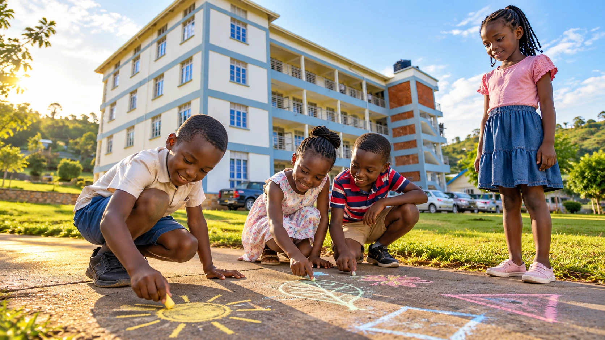
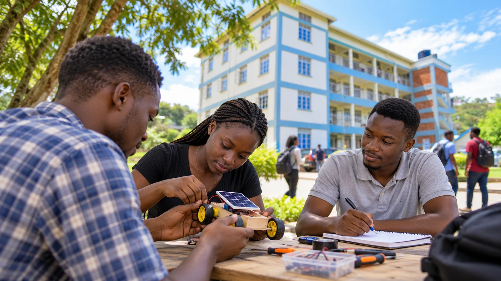
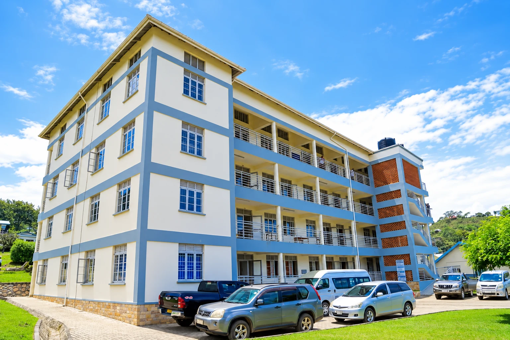
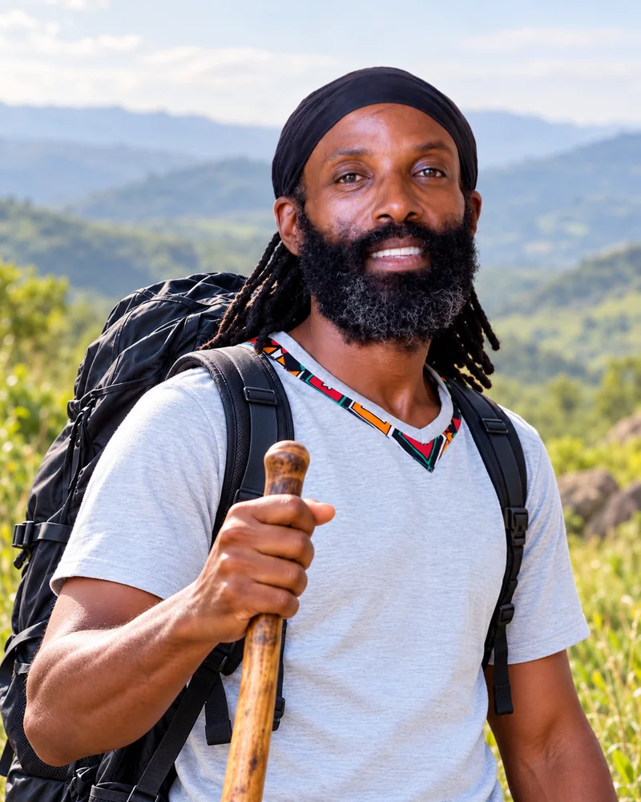
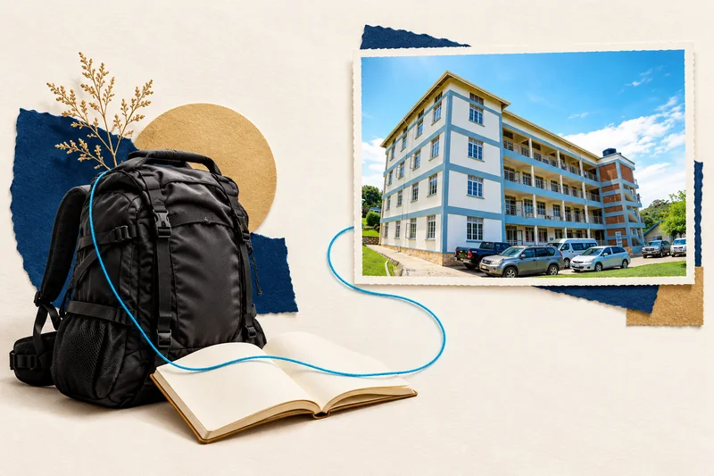

Paybill 400200
Account number 1104672 (both are required to pay)
Recipient: Parenting with Purpose
Pledges open · walk dates unconfirmed
From a child’s first classroom to university. One shared journey for better places to learn in Kagando.
UCU–Kagando University College
Kagando Nursery & Primary School
From 5 symbolic steps · UGX 25,000
Website pledges only · no money collected.
 Diocese of South RwenzoriInstitutional partner
Diocese of South RwenzoriInstitutional partner01 / A step you can take
A book opened. A question asked. A future taking shape. Help carry an education mission that reaches from the first classroom to university.

Support education in Kagando. Choose at least 5 symbolic steps, then record your pledge. No payment is taken.
Loading country prices…
Your country sets the pledge currency. No payment is taken.
Pledge only · no payment taken.
For pledge or contribution help, contact Rtn. CP Joshua Ainabyona.
WhatsApp Joshua · +256 772 150 281 ↗Call +256 772 150 281pci.uganda@gmail.com02 / One mission. Every stage of learning.
Two education priorities, connected by one belief: young people need room to learn, play, question and become.

Kagando Nursery & Primary School is one of the campaign’s education priorities.

UCU–Kagando University College is at the heart of the shared infrastructure mission.
Campaign illustrations with fictional people, based on the UCU–Kagando building reference. These are not photographs of enrolled pupils, actual programmes or the neighbouring primary school.
From a child’s first classroom to university, your support joins one shared mission: better education facilities in Kagando, Kasese.

This is our mobilisation goal for education infrastructure across five priorities.
Our accountability commitment ↗Source proposal: 802 students. Five-year planning projection: 4,000–5,000 students.
This building is UCU–Kagando University College. The neighbouring nursery and primary school is a separate education priority.

04 / A journey taking shape
Shyaka Mbanda’s planned walk connects Nairobi to Kagando over an estimated 1,100 km. The lasting purpose reaches far beyond the finish line: stronger places to learn, live and build skills.
Approximate journey · start, finale and detailed stages await confirmation. Route line is conceptual.
Bring your community into the journey05 / The five-step invitation
Start small. Bring others. Grow together.
Pledge my five steps
UGX 25,000 in Uganda · KES 1,000 in Kenya.
Share the mission. Let each person choose their own part.
Invite your friends to bring five more. Participation is voluntary.
Businesses, churches, clubs, families and friends can pool support for a larger commitment.
Choose a level to discuss the contribution, additional steps, scope and recognition with the campaign team.
Choose 5 steps or more. No money is collected on the website.
Record your pledge ↗02 · ROTARY & COMMUNITYHost the walker, join a relay or bring your network into the campaign.
Plan your club’s role ↗03 · BUSINESSES & INSTITUTIONSBring funding, materials, equipment or expertise to an agreed priority.
Discuss a partnership ↗07 / Trust is part of the journey
A promise is a beginning. It becomes confirmed support only after the campaign team verifies that the money was received.
Your name, symbolic steps and campaign reference are recorded through the existing pledge journey. This is kept separate from money received.
Make your pledgeOnly reconciled live digital payments enter the public received total. Unpublished figures are never shown as zero.
Your intention, with a reference.
Use an approved payment route.
Finance checks the actual receipt.
Approved, reconciled progress.
Already contributed directly? Keep your transaction reference and contact the campaign team about verification. Reporting a payment is not confirmation that it was received.
08 / The mission, on the record
Campaign briefings explain the mission. Confirmed walk dates, stages and cleared field reports are published when available.
09 / A vision of what’s possible
Explore the campaign’s visual story, from the Walking Rotarian to playful discoveries and university ideas. Every image in this collection is an illustration.
AI-generated campaign artwork and fictional campus-life scenes, guided by the supplied portrait and UCU–Kagando building photograph. These illustrate the mission; they do not document actual pupils, events, completed facilities or verified impact.
Illustrated designs for sharing the mission. Sample amounts, dates and status layouts are templates, not live campaign records. Identity artwork is not confirmation of a new partner.
The website records pledges. If you choose to contribute directly, use these campaign-approved channels and keep your provider transaction reference. Direct transfers are recorded separately by the team.
Account number 1104672 (both are required to pay)
Recipient: Parenting with Purpose
Payment name: Support South Rwenzori Diocese Projects
Confirm the name at payment
Account name: South Rwenzori Development Projects
SWIFT / BIC EQBLUGKAXXX
Account name: South Rwenzori Development Projects
SWIFT / BIC EQBLUGKAXXX
Account name: South Rwenzori Development Projects
SWIFT / BIC EQBLUGKAXXX
Confirm account ownership and payment instructions with PCI campaign finance before paying. Campaign collections may be held by named partner organisations. Questions: pci.uganda@gmail.com. Online card checkout is being prepared.
A personalised digital certificate says thank you for supporting education. It becomes available on your payment result page after a verified successful live payment.
Your total is calculated at UGX 5,000 per step, in the currency of your country.
Your result page checks the payment status.
Your name, sponsored steps and verified amount, in one keepsake.
With appreciation to
Your name hereFor carrying steps towards an education future.
Pledges, pending payments and test payments do not unlock a certificate.
Need help with a contribution or a group?
Talk to the campaign team ↗See campaign accountability ↗A step is a symbolic contribution unit of UGX 5,000 (priced in the currency of the country you choose). It supports the shared education priorities; it does not buy a specific building item or measure a physical kilometre. The minimum contribution is 5 steps, or UGX 25,000.
Yes. Choose your steps and record a pledge on the contribution page. No money is collected. A pledge records your intention to support and is kept separate from received funds.
After a verified successful live payment, your payment result page unlocks a personalised certificate. Keep that page open in the browser you used to contribute. Pledges, pending payments and test payments do not unlock certificates. Automatic email delivery is not active.
UCU–Kagando University College expansion and the neighbouring Kagando Nursery & Primary School. The five-year UGX 25 billion mobilisation goal covers student hostels, learning spaces and ICT, faculty and staff facilities, the neighbouring school and wider university expansion.
Successful payments receive a receipt after the payment provider verifies the transaction. Public digital received totals include only live payments reconciled by PCI finance. Pledges and in-kind support remain separate. Read the reporting rules.
Yes. Discuss funding, construction support, equipment, expertise or programme investment with the campaign team. Scope, reporting and recognition are agreed in writing. Explore partnership options.
Every step builds a future
Better places to learn. A future we build together.
Choose the part you can carry.